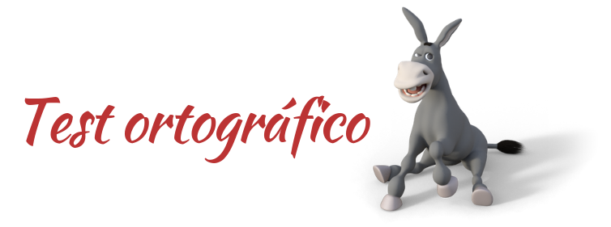

Ahora trabajamos individualmente.
Ahora trabajamos individualmente.
Acabamos de ver que el español es idioma oficial de 20 países: Argentina, Bolivia, Chile, Colombia, Costa Rica, Cuba, República Dominicana, Ecuador, El Salvador, Guinea Ecuatorial, Guatemala, Honduras, México, Nicaragua, Panamá, Paraguay, Perú, España, Uruguay y Venezuela; además de Puerto Rico.
Os preguntaréis cómo es posible que un idioma que se encuentra repartido por nada más y nada menos que 20 países, a un lado y otro del océano, no acabe fragmentándose en lenguas diferentes. Es lo que sucedió, por ejemplo, con el latín, de donde surgieron las lenguas romances que veíamos antes.
Sin embargo, el español presenta una gran unidad a pesar de su diversidad. Esto es posible gracias a que compartimos una mismo sistema lingüístico, una gramática, una ortografía y gran parte de nuestro vocabulario. Es lo que explica que la palabra zapato suene 'zapato' o 'sapato', según la zona en que la escuchemos, pero todos los hablantes de español la escribimos con las mismas grafías: z-a-p-a-t-o.
Por la gran importancia de nuestra ortografía es por lo que La Brigada Ortográfica se ha propuesto dar caza a esas especies esquivas, que tanto se nos resisten cuando escribimos en redes sociales: acentos, mayúsculas, signos de puntuación, haches... Si no somos cuidadosos al utilizarlas, llegará un momento en que no nos entendamos.
Pero, para poder entrar en las brigadas, antes nos piden un control rutinario: la realización de un test ortográfico.
Hacemos clic en la imagen para acceder al test:

¡No os preocupéis por el resultado! Al final del proyecto, os proponemos que lo completéis de nuevo. ¡Seguro que los resultados mejoran mucho!